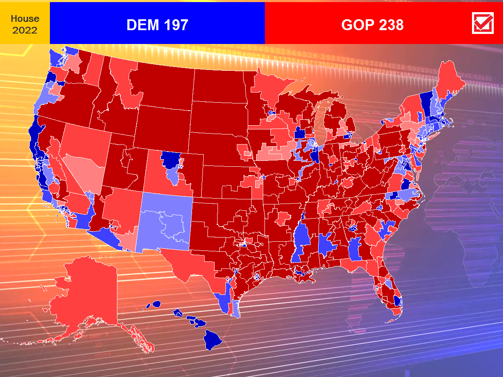

This year is the first time I have experimented with a House model. This model is fundamentally different from the statewide models used elsewhere, as House races are not polled individually. Instead, the model takes into account some basics, such as generic ballot polls, partisan lean of a district based on previous presidential election results, and the electoral performance history of candidates running.
Currently, it is still early in the race and polling remains uncertain, and it is likely that current generic ballot polls overestimate the Democrats' chances of holding their slim House majority. Overall, it is expected that the GOP will regain the majority by a comfortable margin this year.
The outcome of these elections will be covered, with a live model of statewide races, on election night via Twitch stream and an interactive web app, both linked here, on November 8 at 6:00 PM EST.
| Party | Probability | Expected | Rated |
| Republicans | 96.0% | 232.7 | 231 |
| Democrats | 4.0% | 202.3 | 204 |
Popular vote: Republicans +1.5
| Date | Popular Vote |
Probability | Expected | Rated | |||
| DEM | GOP | DEM | GOP | DEM | GOP | ||
| 10/03 | R +1.5 | 4.0% | 96.0% | 202.3 | 232.7 | 204 | 231 |
| 09/26 | R +1.0 | 6.0% | 94.0% | 204.1 | 230.9 | 206 | 229 |

| District | Margin | Probability | Rating |
| AK-AL | R +15.9 | 94.0% R | Likely R |
| AL-01 | -- | 100% R | Safe R |
| AL-02 | R +34.9 | 99.8% R | Safe R |
| AL-03 | R +39.6 | >99.9% R | Safe R |
| AL-04 | R +66.9 | >99.9% R | Safe R |
| AL-05 | R +32.4 | 99.6% R | Safe R |
| AL-06 | -- | 100% R | Safe R |
| AL-07 | D +26.0 | 98.4% D | Safe D |
| AR-01 | R +51.1 | >99.9% R | Safe R |
| AR-02 | R +19.7 | 96.8% R | Likely R |
| AR-03 | R +32.1 | 99.5% R | Safe R |
| AR-04 | R +44.3 | >99.9% R | Safe R |
| AZ-01 | R +8.8 | 79.5% R | Leans R |
| AZ-02 | R +13.1 | 90.1% R | Likely R |
| AZ-03 | D +46.1 | >99.9% D | Safe D |
| AZ-04 | D +3.8 | 66.8% D | Leans D |
| AZ-05 | R +23.9 | 98.3% R | Safe R |
| AZ-06 | R +6.1 | 73.1% R | Leans R |
| AZ-07 | D +22.7 | 95.6% D | Likely D |
| AZ-08 | -- | 100% R | Safe R |
| AZ-09 | -- | 100% R | Safe R |
| CA-01 | R +23.6 | 98.0% R | Safe R |
| CA-02 | D +43.2 | 99.8% D | Safe D |
| CA-03 | R +7.9 | 79.1% R | Leans R |
| CA-04 | D +33.3 | 99.6% D | Safe D |
| CA-05 | R +18.1 | 95.9% R | Likely R |
| CA-06 | D +10.1 | 82.5% D | Likely D |
| CA-07 | D +33.0 | 99.5% D | Safe D |
| CA-08 | D +45.7 | 99.8% D | Safe D |
| CA-09 | D +3.1 | 62.9% D | Leans D |
| CA-10 | -- | 100% D | Safe D |
| CA-11 | D +62.2 | >99.9% D | Safe D |
| CA-12 | D +73.1 | >99.9% D | Safe D |
| CA-13 | D +5.1 | 71.5% D | Leans D |
| CA-14 | D +37.0 | 99.5% D | Safe D |
| CA-15 | -- | 100% D | Safe D |
| CA-16 | -- | 100% D | Safe D |
| CA-17 | D +38.0 | 99.5% D | Safe D |
| CA-18 | D +33.0 | 98.8% D | Safe D |
| CA-19 | D +36.4 | 99.7% D | Safe D |
| CA-20 | R +36.0 | 99.7% R | Safe R |
| CA-21 | D +5.6 | 67.7% D | Leans D |
| CA-22 | R +12.3 | 80.8% R | Likely R |
| CA-23 | R +15.8 | 93.9% R | Likely R |
| CA-24 | D +18.5 | 92.3% D | Likely D |
| CA-25 | D +11.4 | 89.0% D | Likely D |
| CA-26 | D +11.7 | 85.7% D | Likely D |
| CA-27 | R +0.8 | 50.9% R | Leans R |
| CA-28 | D +29.8 | 99.3% D | Safe D |
| CA-29 | -- | 100% D | Safe D |
| CA-30 | -- | 100% D | Safe D |
| CA-31 | D +21.4 | 95.1% D | Likely D |
| CA-32 | D +33.0 | 99.2% D | Safe D |
| CA-33 | D +14.1 | 86.5% D | Likely D |
| CA-34 | -- | 100% D | Safe D |
| CA-35 | D +21.9 | 97.2% D | Likely D |
| CA-36 | D +33.5 | 98.9% D | Safe D |
| CA-37 | -- | 100% D | Safe D |
| CA-38 | D +20.3 | 94.2% D | Likely D |
| CA-39 | D +18.4 | 94.1% D | Likely D |
| CA-40 | R +11.9 | 85.4% R | Likely R |
| CA-41 | R +11.2 | 85.2% R | Likely R |
| CA-42 | D +35.6 | 99.2% D | Safe D |
| CA-43 | D +51.0 | 99.9% D | Safe D |
| CA-44 | D +41.3 | 99.8% D | Safe D |
| CA-45 | R +2.3 | 57.1% R | Leans R |
| CA-46 | D +28.4 | 99.4% D | Safe D |
| CA-47 | R +1.5 | 53.0% R | Leans R |
| CA-48 | R +17.7 | 95.4% R | Likely R |
| CA-49 | D +3.2 | 63.8% D | Leans D |
| CA-50 | D +26.5 | 98.3% D | Safe D |
| CA-51 | D +21.4 | 97.1% D | Likely D |
| CA-52 | D +24.7 | 95.8% D | Likely D |
| CO-01 | D +53.1 | >99.9% D | Safe D |
| CO-02 | D +32.8 | 99.3% D | Safe D |
| CO-03 | R +13.9 | 91.6% R | Likely R |
| CO-04 | R +26.5 | 98.9% R | Safe R |
| CO-05 | R +16.0 | 94.2% R | Likely R |
| CO-06 | D +16.0 | 91.9% D | Likely D |
| CO-07 | D +8.5 | 81.7% D | Likely D |
| CO-08 | R +2.0 | 56.5% R | Leans R |
| CT-01 | D +21.9 | 97.1% D | Likely D |
| CT-02 | D +16.9 | 95.8% D | Likely D |
| CT-03 | D +18.0 | 96.9% D | Likely D |
| CT-04 | D +22.0 | 95.6% D | Likely D |
| CT-05 | D +5.7 | 74.0% D | Leans D |
| DE-AL | D +16.2 | 95.6% D | Likely D |
| FL-01 | R +38.0 | 99.9% R | Safe R |
| FL-02 | R +17.6 | 95.4% R | Likely R |
| FL-03 | R +19.6 | 96.8% R | Likely R |
| FL-04 | R +12.7 | 89.8% R | Likely R |
| FL-05 | -- | 100% R | Safe R |
| FL-06 | -- | 100% R | Safe R |
| FL-07 | R +11.5 | 87.8% R | Likely R |
| FL-08 | R +26.3 | 98.7% R | Safe R |
| FL-09 | D +9.8 | 82.5% D | Likely D |
| FL-10 | D +25.5 | 98.3% D | Safe D |
| FL-11 | R +18.7 | 95.8% R | Likely R |
| FL-12 | R +36.9 | 99.8% R | Safe R |
| FL-13 | R +11.6 | 87.2% R | Likely R |
| FL-14 | D +16.9 | 96.2% D | Likely D |
| FL-15 | R +9.7 | 83.7% R | Likely R |
| FL-16 | R +17.0 | 94.3% R | Likely R |
| FL-17 | R +23.2 | 98.2% R | Safe R |
| FL-18 | -- | 100% R | Safe R |
| FL-19 | R +27.0 | 99.1% R | Safe R |
| FL-20 | D +45.3 | 99.9% D | Safe D |
| FL-21 | R +18.0 | 94.9% R | Likely R |
| FL-22 | D +14.3 | 93.7% D | Likely D |
| FL-23 | D +7.4 | 78.6% D | Leans D |
| FL-24 | D +44.3 | 99.9% D | Safe D |
| FL-25 | D +14.5 | 92.7% D | Likely D |
| FL-26 | R +37.3 | 99.7% R | Safe R |
| FL-27 | R +18.7 | 93.5% R | Likely R |
| FL-28 | R +11.1 | 86.3% R | Likely R |
| GA-01 | R +20.4 | 97.1% R | Likely R |
| GA-02 | D +9.4 | 85.4% D | Likely D |
| GA-03 | R +37.3 | 99.9% R | Safe R |
| GA-04 | D +49.5 | >99.9% D | Safe D |
| GA-05 | D +58.0 | >99.9% D | Safe D |
| GA-06 | R +21.4 | 97.6% R | Likely R |
| GA-07 | D +18.1 | 94.0% D | Likely D |
| GA-08 | R +34.0 | 99.7% R | Safe R |
| GA-09 | R +43.7 | >99.9% R | Safe R |
| GA-10 | R +31.8 | 99.5% R | Safe R |
| GA-11 | R +23.2 | 98.0% R | Safe R |
| GA-12 | R +18.8 | 95.5% R | Likely R |
| GA-13 | D +53.5 | >99.9% D | Safe D |
| GA-14 | R +42.6 | >99.9% R | Safe R |
| HI-01 | D +29.1 | 99.5% D | Safe D |
| HI-02 | D +25.4 | 98.8% D | Safe D |
| IA-01 | R +7.3 | 76.4% R | Leans R |
| IA-02 | R +9.7 | 83.6% R | Likely R |
| IA-03 | R +7.0 | 75.8% R | Leans R |
| IA-04 | R +30.2 | 99.3% R | Safe R |
| ID-01 | R +43.5 | >99.9% R | Safe R |
| ID-02 | R +29.7 | 99.4% R | Safe R |
| IL-01 | D +35.8 | 99.5% D | Safe D |
| IL-02 | D +32.1 | 99.1% D | Safe D |
| IL-03 | D +34.8 | 99.5% D | Safe D |
| IL-04 | D +38.5 | 99.6% D | Safe D |
| IL-05 | D +33.4 | 99.4% D | Safe D |
| IL-06 | D +0.2 | 51.3% D | Leans D |
| IL-07 | -- | 100% D | Safe D |
| IL-08 | D +11.9 | 90.3% D | Likely D |
| IL-09 | D +32.9 | 99.1% D | Safe D |
| IL-10 | D +17.8 | 93.5% D | Likely D |
| IL-11 | D +8.2 | 79.4% D | Leans D |
| IL-12 | R +47.3 | >99.9% R | Safe R |
| IL-13 | D +5.4 | 72.5% D | Leans D |
| IL-14 | D +7.2 | 79.3% D | Leans D |
| IL-15 | R +43.8 | >99.9% R | Safe R |
| IL-16 | R +33.6 | 99.5% R | Safe R |
| IL-17 | D +6.8 | 78.3% D | Leans D |
| IN-01 | D +8.5 | 83.2% D | Likely D |
| IN-02 | R +28.1 | 99.2% R | Safe R |
| IN-03 | R +35.6 | 99.8% R | Safe R |
| IN-04 | R +34.7 | 99.8% R | Safe R |
| IN-05 | R +21.3 | 97.5% R | Likely R |
| IN-06 | R +36.4 | 99.8% R | Safe R |
| IN-07 | D +36.0 | 99.5% D | Safe D |
| IN-08 | R +38.7 | 99.9% R | Safe R |
| IN-09 | R +32.8 | 99.6% R | Safe R |
| KS-01 | R +34.8 | 99.7% R | Safe R |
| KS-02 | R +21.4 | 97.4% R | Likely R |
| KS-03 | R +1.1 | 52.8% R | Leans R |
| KS-04 | R +26.6 | 98.9% R | Safe R |
| KY-01 | R +46.5 | >99.9% R | Safe R |
| KY-02 | R +42.5 | >99.9% R | Safe R |
| KY-03 | D +16.6 | 94.4% D | Likely D |
| KY-04 | R +37.5 | 99.8% R | Safe R |
| KY-05 | R +64.9 | >99.9% R | Safe R |
| KY-06 | R +15.2 | 91.7% R | Likely R |
| LA-01 | R +53.9 | >99.9% R | Safe R |
| LA-02 | D +45.7 | 99.9% D | Safe D |
| LA-03 | R +45.3 | >99.9% R | Safe R |
| LA-04 | -- | 100% R | Safe R |
| LA-05 | R +35.1 | 99.8% R | Safe R |
| LA-06 | -- | 100% R | Safe R |
| MA-01 | D +16.0 | 93.8% D | Likely D |
| MA-02 | D +28.9 | 99.5% D | Safe D |
| MA-03 | D +21.1 | 96.8% D | Likely D |
| MA-04 | -- | 100% D | Safe D |
| MA-05 | D +44.1 | 99.8% D | Safe D |
| MA-06 | D +26.4 | 99.3% D | Safe D |
| MA-07 | D +64.1 | >99.9% D | Safe D |
| MA-08 | D +29.1 | 98.9% D | Safe D |
| MA-09 | D +13.4 | 91.9% D | Likely D |
| MD-01 | R +20.1 | 97.0% R | Likely R |
| MD-02 | D +15.0 | 92.8% D | Likely D |
| MD-03 | D +21.4 | 98.0% D | Safe D |
| MD-04 | D +72.1 | >99.9% D | Safe D |
| MD-05 | D +31.2 | 99.3% D | Safe D |
| MD-06 | D +2.8 | 62.8% D | Leans D |
| MD-07 | D +50.0 | 99.9% D | Safe D |
| MD-08 | D +53.4 | >99.9% D | Safe D |
| ME-01 | D +19.7 | 97.6% D | Likely D |
| ME-02 | R +11.1 | 86.3% R | Likely R |
| MI-01 | R +24.7 | 98.5% R | Safe R |
| MI-02 | R +36.5 | 99.8% R | Safe R |
| MI-03 | D +1.2 | 56.9% D | Leans D |
| MI-04 | R +10.5 | 85.5% R | Likely R |
| MI-05 | R +28.7 | 99.2% R | Safe R |
| MI-06 | D +24.1 | 98.9% D | Safe D |
| MI-07 | R +3.8 | 65.0% R | Leans R |
| MI-08 | D +0.4 | 52.8% D | Leans D |
| MI-09 | R +35.4 | 99.8% R | Safe R |
| MI-10 | R +7.1 | 76.4% R | Leans R |
| MI-11 | D +16.7 | 95.9% D | Likely D |
| MI-12 | D +42.4 | 99.8% D | Safe D |
| MI-13 | D +42.6 | 99.8% D | Safe D |
| MN-01 | R +15.1 | 93.1% R | Likely R |
| MN-02 | D +0.4 | 50.4% D | Leans D |
| MN-03 | D +12.8 | 87.6% D | Likely D |
| MN-04 | D +30.5 | 99.0% D | Safe D |
| MN-05 | D +53.1 | >99.9% D | Safe D |
| MN-06 | R +24.5 | 98.6% R | Safe R |
| MN-07 | R +34.4 | 99.1% R | Safe R |
| MN-08 | R +15.9 | 93.3% R | Likely R |
| MO-01 | D +50.6 | >99.9% D | Safe D |
| MO-02 | R +13.8 | 91.5% R | Likely R |
| MO-03 | R +31.5 | 99.5% R | Safe R |
| MO-04 | R +44.8 | >99.9% R | Safe R |
| MO-05 | D +22.7 | 98.4% D | Safe D |
| MO-06 | R +45.8 | >99.9% R | Safe R |
| MO-07 | R +46.6 | >99.9% R | Safe R |
| MO-08 | R +56.4 | >99.9% R | Safe R |
| MS-01 | R +40.4 | >99.9% R | Safe R |
| MS-02 | D +22.7 | 98.5% D | Safe D |
| MS-03 | R +33.1 | 99.6% R | Safe R |
| MS-04 | R +43.2 | >99.9% R | Safe R |
| MT-01 | R +12.9 | 90.2% R | Likely R |
| MT-02 | R +31.0 | 99.3% R | Safe R |
| NC-01 | D +2.1 | 60.5% D | Leans D |
| NC-02 | D +22.4 | 97.3% D | Likely D |
| NC-03 | R +31.6 | 99.6% R | Safe R |
| NC-04 | D +28.8 | 98.9% D | Safe D |
| NC-05 | R +27.9 | 99.2% R | Safe R |
| NC-06 | D +4.4 | 67.8% D | Leans D |
| NC-07 | R +19.1 | 96.5% R | Likely R |
| NC-08 | R +39.7 | >99.9% R | Safe R |
| NC-09 | R +14.8 | 92.6% R | Likely R |
| NC-10 | R +44.9 | >99.9% R | Safe R |
| NC-11 | R +16.0 | 94.2% R | Likely R |
| NC-12 | D +23.9 | 97.8% D | Likely D |
| NC-13 | R +4.6 | 67.5% R | Leans R |
| NC-14 | D +10.7 | 86.5% D | Likely D |
| ND-AL | -- | 100% R | Safe R |
| NE-01 | R +16.8 | 94.9% R | Likely R |
| NE-02 | R +5.1 | 66.8% R | Leans R |
| NE-03 | R +58.8 | >99.9% R | Safe R |
| NH-01 | D +2.7 | 63.0% D | Leans D |
| NH-02 | D +6.2 | 76.5% D | Leans D |
| NJ-01 | D +18.9 | 96.1% D | Likely D |
| NJ-02 | R +9.4 | 81.4% R | Likely R |
| NJ-03 | D +9.0 | 83.5% D | Likely D |
| NJ-04 | R +29.6 | 99.4% R | Safe R |
| NJ-05 | D +10.4 | 87.8% D | Likely D |
| NJ-06 | D +18.4 | 97.2% D | Likely D |
| NJ-07 | R +6.0 | 70.9% R | Leans R |
| NJ-08 | D +38.0 | 99.6% D | Safe D |
| NJ-09 | D +18.9 | 97.4% D | Likely D |
| NJ-10 | D +55.6 | >99.9% D | Safe D |
| NJ-11 | D +16.4 | 95.9% D | Likely D |
| NJ-12 | D +27.1 | 98.3% D | Safe D |
| NM-01 | D +8.7 | 82.2% D | Likely D |
| NM-02 | D +3.8 | 67.4% D | Leans D |
| NM-03 | D +5.7 | 74.2% D | Leans D |
| NV-01 | D +2.3 | 61.1% D | Leans D |
| NV-02 | R +22.1 | 96.9% R | Likely R |
| NV-03 | D +3.4 | 66.0% D | Leans D |
| NV-04 | D +0.6 | 50.0% D | Leans D |
| NY-01 | R +6.0 | 72.8% R | Leans R |
| NY-02 | R +8.4 | 79.9% R | Leans R |
| NY-03 | D +4.8 | 71.3% D | Leans D |
| NY-04 | D +8.9 | 82.5% D | Likely D |
| NY-05 | D +53.3 | >99.9% D | Safe D |
| NY-06 | D +31.0 | 99.6% D | Safe D |
| NY-07 | D +57.8 | >99.9% D | Safe D |
| NY-08 | D +47.8 | >99.9% D | Safe D |
| NY-09 | -- | 100% D | Safe D |
| NY-10 | D +62.9 | >99.9% D | Safe D |
| NY-11 | R +11.4 | 84.7% R | Likely R |
| NY-12 | D +62.3 | >99.9% D | Safe D |
| NY-13 | D +66.8 | >99.9% D | Safe D |
| NY-14 | D +49.1 | >99.9% D | Safe D |
| NY-15 | D +64.2 | >99.9% D | Safe D |
| NY-16 | D +36.9 | 99.6% D | Safe D |
| NY-17 | D +8.6 | 83.5% D | Likely D |
| NY-18 | D +2.2 | 61.0% D | Leans D |
| NY-19 | R +2.0 | 56.5% R | Leans R |
| NY-20 | D +17.9 | 96.9% D | Likely D |
| NY-21 | R +21.0 | 96.8% R | Likely R |
| NY-22 | D +1.2 | 56.9% D | Leans D |
| NY-23 | R +22.9 | 98.1% R | Safe R |
| NY-24 | R +20.1 | 94.4% R | Likely R |
| NY-25 | D +11.3 | 84.6% D | Likely D |
| NY-26 | D +29.5 | 99.5% D | Safe D |
| OH-01 | R +1.3 | 52.8% R | Leans R |
| OH-02 | R +53.0 | >99.9% R | Safe R |
| OH-03 | D +38.1 | 99.7% D | Safe D |
| OH-04 | R +42.2 | >99.9% R | Safe R |
| OH-05 | R +36.0 | 99.8% R | Safe R |
| OH-06 | R +35.0 | 99.8% R | Safe R |
| OH-07 | R +15.1 | 93.1% R | Likely R |
| OH-08 | R +29.6 | 99.4% R | Safe R |
| OH-09 | R +6.9 | 74.9% R | Leans R |
| OH-10 | R +16.6 | 92.7% R | Likely R |
| OH-11 | D +50.2 | >99.9% D | Safe D |
| OH-12 | R +36.1 | 99.8% R | Safe R |
| OH-13 | R +3.7 | 63.4% R | Leans R |
| OH-14 | R +23.1 | 97.9% R | Likely R |
| OH-15 | R +12.8 | 90.0% R | Likely R |
| OK-01 | R +25.8 | 98.6% R | Safe R |
| OK-02 | R +58.4 | >99.9% R | Safe R |
| OK-03 | R +48.5 | >99.9% R | Safe R |
| OK-04 | R +36.0 | 99.8% R | Safe R |
| OK-05 | R +23.2 | 98.0% R | Safe R |
| OR-01 | D +33.7 | 99.5% D | Safe D |
| OR-02 | R +33.4 | 99.6% R | Safe R |
| OR-03 | D +39.8 | 99.7% D | Safe D |
| OR-04 | D +8.7 | 83.3% D | Likely D |
| OR-05 | D +0.0 | 52.1% D | Leans D |
| OR-06 | D +7.4 | 78.6% D | Leans D |
| PA-01 | R +9.5 | 79.6% R | Leans R |
| PA-02 | D +37.7 | 99.7% D | Safe D |
| PA-03 | -- | 100% D | Safe D |
| PA-04 | D +14.0 | 92.3% D | Likely D |
| PA-05 | D +24.3 | 97.3% D | Likely D |
| PA-06 | D +10.3 | 86.8% D | Likely D |
| PA-07 | R +5.1 | 69.6% R | Leans R |
| PA-08 | R +5.7 | 71.5% R | Leans R |
| PA-09 | R +39.6 | 99.8% R | Safe R |
| PA-10 | R +10.3 | 85.2% R | Likely R |
| PA-11 | R +26.4 | 98.9% R | Safe R |
| PA-12 | D +19.6 | 97.8% D | Likely D |
| PA-13 | -- | 100% R | Safe R |
| PA-14 | -- | 100% R | Safe R |
| PA-15 | R +41.9 | >99.9% R | Safe R |
| PA-16 | R +23.9 | 97.1% R | Likely R |
| PA-17 | R +0.7 | 50.9% R | Leans R |
| RI-01 | D +23.8 | 98.2% D | Safe D |
| RI-02 | D +7.9 | 80.1% D | Likely D |
| SC-01 | R +12.8 | 88.0% R | Likely R |
| SC-02 | R +17.5 | 95.3% R | Likely R |
| SC-03 | -- | 100% R | Safe R |
| SC-04 | -- | 100% R | Safe R |
| SC-05 | R +25.3 | 98.7% R | Safe R |
| SC-06 | D +25.5 | 98.2% D | Safe D |
| SC-07 | R +24.2 | 98.5% R | Safe R |
| SD-AL | -- | 100% R | Safe R |
| TN-01 | R +58.3 | >99.9% R | Safe R |
| TN-02 | R +36.2 | 99.8% R | Safe R |
| TN-03 | R +37.9 | 99.9% R | Safe R |
| TN-04 | R +41.6 | 99.9% R | Safe R |
| TN-05 | R +17.1 | 95.1% R | Likely R |
| TN-06 | R +34.2 | 99.7% R | Safe R |
| TN-07 | R +21.6 | 97.7% R | Likely R |
| TN-08 | R +46.0 | >99.9% R | Safe R |
| TN-09 | D +39.8 | 99.7% D | Safe D |
| TX-01 | R +50.9 | >99.9% R | Safe R |
| TX-02 | R +30.1 | 99.5% R | Safe R |
| TX-03 | R +20.1 | 97.0% R | Likely R |
| TX-04 | R +31.9 | 99.6% R | Safe R |
| TX-05 | R +29.0 | 99.4% R | Safe R |
| TX-06 | -- | 100% R | Safe R |
| TX-07 | D +23.8 | 97.9% D | Likely D |
| TX-08 | R +32.5 | 99.6% R | Safe R |
| TX-09 | D +47.4 | >99.9% D | Safe D |
| TX-10 | R +24.9 | 98.7% R | Safe R |
| TX-11 | -- | 100% R | Safe R |
| TX-12 | R +26.7 | 98.8% R | Safe R |
| TX-13 | R +50.5 | >99.9% R | Safe R |
| TX-14 | R +36.6 | 99.8% R | Safe R |
| TX-15 | R +8.1 | 79.4% R | Leans R |
| TX-16 | D +27.1 | 98.1% D | Safe D |
| TX-17 | R +28.8 | 99.3% R | Safe R |
| TX-18 | D +38.0 | 99.4% D | Safe D |
| TX-19 | -- | 100% R | Safe R |
| TX-20 | D +28.8 | 99.2% D | Safe D |
| TX-21 | R +25.0 | 98.6% R | Safe R |
| TX-22 | R +23.2 | 98.1% R | Safe R |
| TX-23 | R +13.6 | 91.2% R | Likely R |
| TX-24 | R +19.4 | 96.5% R | Likely R |
| TX-25 | -- | 100% R | Safe R |
| TX-26 | -- | 100% R | Safe R |
| TX-27 | R +30.8 | 99.4% R | Safe R |
| TX-28 | D +11.1 | 88.6% D | Likely D |
| TX-29 | D +30.0 | 99.0% D | Safe D |
| TX-30 | D +49.5 | >99.9% D | Safe D |
| TX-31 | -- | 100% R | Safe R |
| TX-32 | D +26.0 | 98.2% D | Safe D |
| TX-33 | D +42.3 | 99.8% D | Safe D |
| TX-34 | D +8.4 | 80.0% D | Likely D |
| TX-35 | D +38.4 | 99.7% D | Safe D |
| TX-36 | R +38.8 | 99.9% R | Safe R |
| TX-37 | D +46.5 | 99.9% D | Safe D |
| TX-38 | R +25.4 | 98.8% R | Safe R |
| UT-01 | R +27.2 | 99.0% R | Safe R |
| UT-02 | R +27.1 | 98.7% R | Safe R |
| UT-03 | R +36.6 | 99.6% R | Safe R |
| UT-04 | R +28.6 | 98.6% R | Safe R |
| VA-01 | R +14.8 | 92.0% R | Likely R |
| VA-02 | R +5.0 | 68.4% R | Leans R |
| VA-03 | D +32.9 | 99.4% D | Safe D |
| VA-04 | D +29.4 | 98.9% D | Safe D |
| VA-05 | R +12.7 | 88.5% R | Likely R |
| VA-06 | R +28.1 | 99.2% R | Safe R |
| VA-07 | D +2.2 | 60.8% D | Leans D |
| VA-08 | D +45.6 | 99.8% D | Safe D |
| VA-09 | R +45.8 | >99.9% R | Safe R |
| VA-10 | D +9.9 | 82.4% D | Likely D |
| VA-11 | D +33.8 | 99.3% D | Safe D |
| VT-AL | D +29.2 | 98.9% D | Safe D |
| WA-01 | D +22.5 | 96.5% D | Likely D |
| WA-02 | D +17.4 | 95.3% D | Likely D |
| WA-03 | R +10.3 | 85.2% R | Likely R |
| WA-04 | R +27.0 | 98.6% R | Safe R |
| WA-05 | R +17.0 | 94.8% R | Likely R |
| WA-06 | D +14.7 | 94.2% D | Likely D |
| WA-07 | D +63.1 | >99.9% D | Safe D |
| WA-08 | R +3.6 | 61.7% R | Leans R |
| WA-09 | D +38.4 | 99.7% D | Safe D |
| WA-10 | D +12.0 | 88.8% D | Likely D |
| WI-01 | R +12.6 | 87.9% R | Likely R |
| WI-02 | D +35.4 | 99.5% D | Safe D |
| WI-03 | R +8.3 | 78.1% R | Leans R |
| WI-04 | D +43.8 | 99.8% D | Safe D |
| WI-05 | R +29.8 | 99.4% R | Safe R |
| WI-06 | -- | 100% R | Safe R |
| WI-07 | R +25.6 | 98.8% R | Safe R |
| WI-08 | -- | 100% R | Safe R |
| WV-01 | R +39.3 | 99.2% R | Safe R |
| WV-02 | R +37.7 | 99.5% R | Safe R |
| WY-AL | R +48.1 | >99.9% R | Safe R |